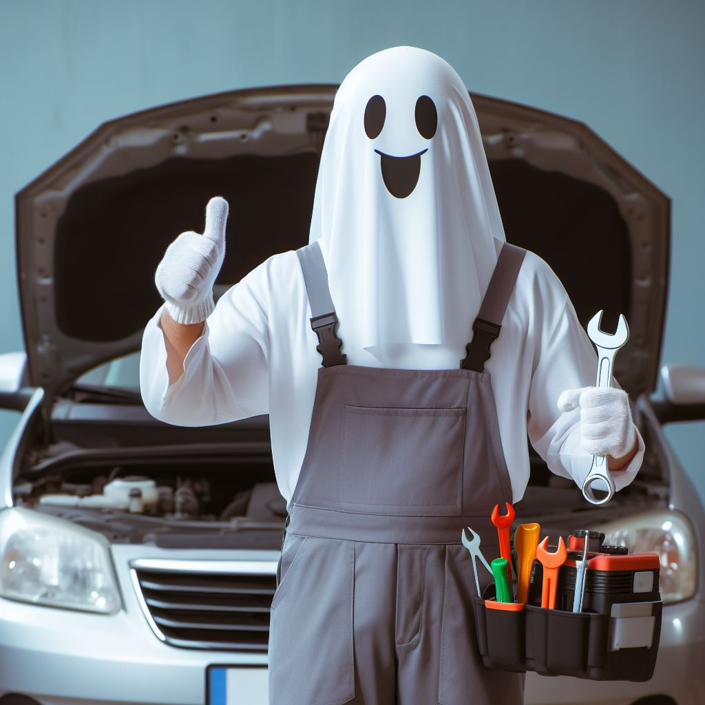
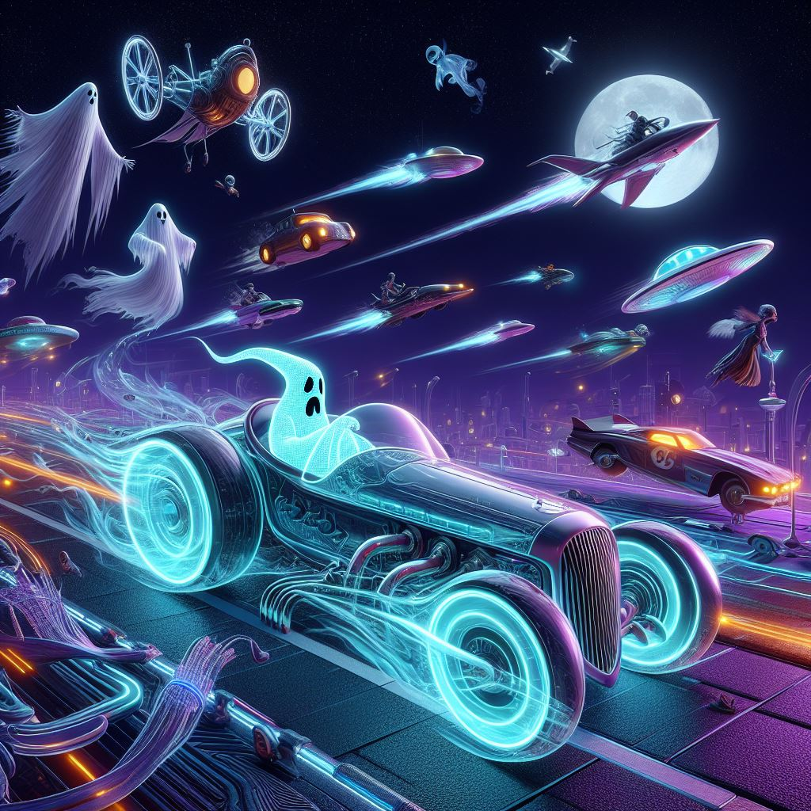

Projeto

Objetivo
O projeto visa construir um carrinho motorizado que navegue por um circuito ambiental, integrando
sustentabilidade em seu design. Busca também desenvolver
habilidades de programação em Arduino, complementando o conhecimento em JavaScript, e documentar o processo, comparando as duas linguagens.
habilidades de programação em Arduino, complementando o conhecimento em JavaScript, e documentar o processo, comparando as duas linguagens.

Desenvolvimento
Na primeira semana, definimos os cargos, iniciamos o design
do carrinho, a documentação,
introdução ao Arduino e planejamos recursos. Na segunda semana, continuamos o site
com fotos dos integrantes e fizemos o código. Na terceira semana, elaboramos slides
concluímos a Sprint 2, iniciamos a Sprint 3 e corrigimos erros no código do site. Na
quarta semana, finalizamos os slides, atualizamos a documentação e continuamos corrigindo
o código.
introdução ao Arduino e planejamos recursos. Na segunda semana, continuamos o site
com fotos dos integrantes e fizemos o código. Na terceira semana, elaboramos slides
concluímos a Sprint 2, iniciamos a Sprint 3 e corrigimos erros no código do site. Na
quarta semana, finalizamos os slides, atualizamos a documentação e continuamos corrigindo
o código.

Conclusão
O projeto do carrinho robótico Arduino atingiu seus
objetivos, desenvolvendo um hardware
funcional e programação para movimento. A equipe expandiu seus conhecimentos além do JavaScript, ganhando uma experiência significativa com Arduino. A documentação detalhada
foi crucial para o acompanhamento e futuras referências.
funcional e programação para movimento. A equipe expandiu seus conhecimentos além do JavaScript, ganhando uma experiência significativa com Arduino. A documentação detalhada
foi crucial para o acompanhamento e futuras referências.
Plataformas Utilizadas